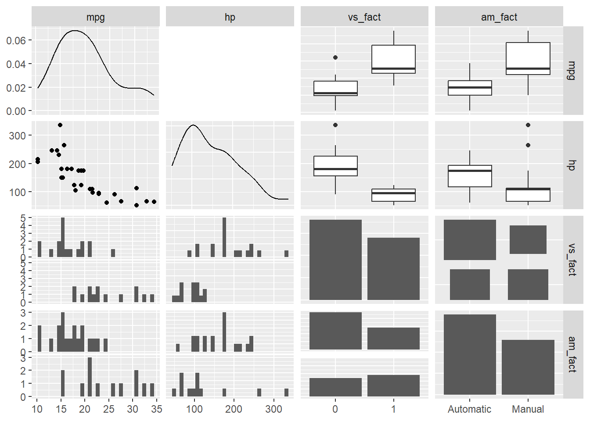
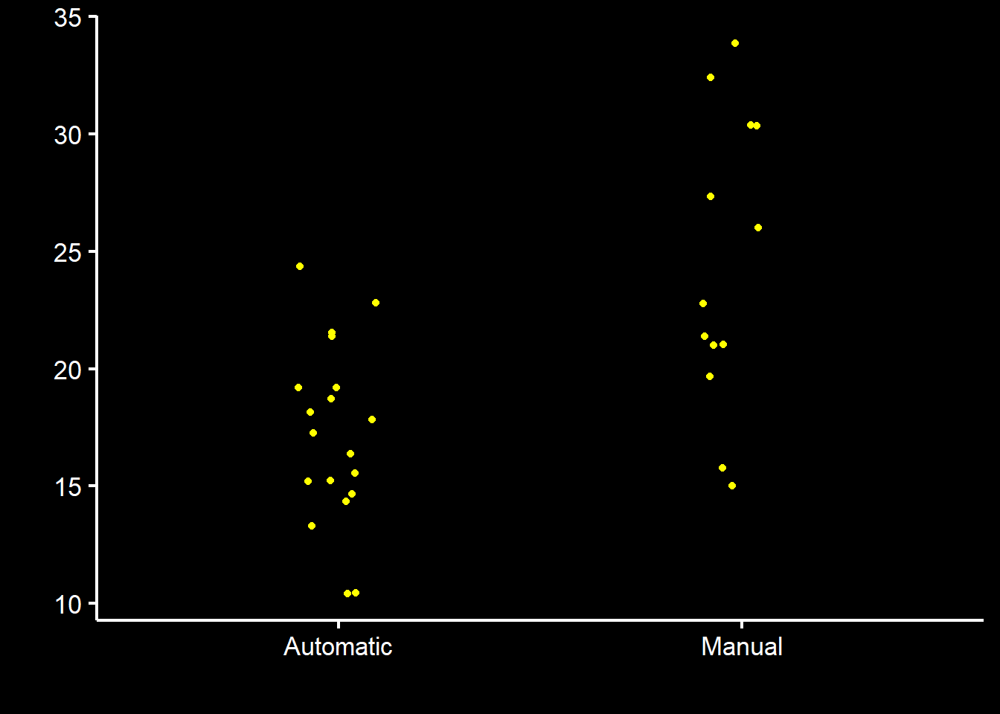
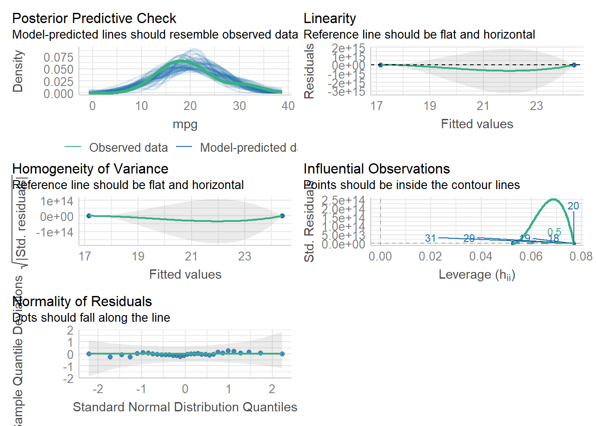
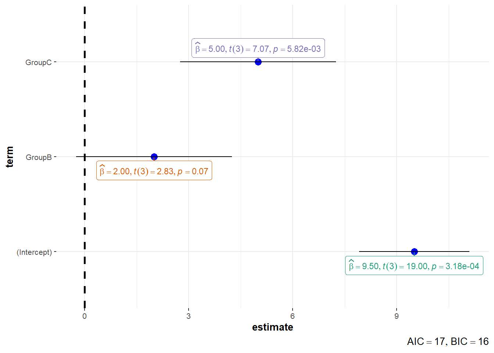
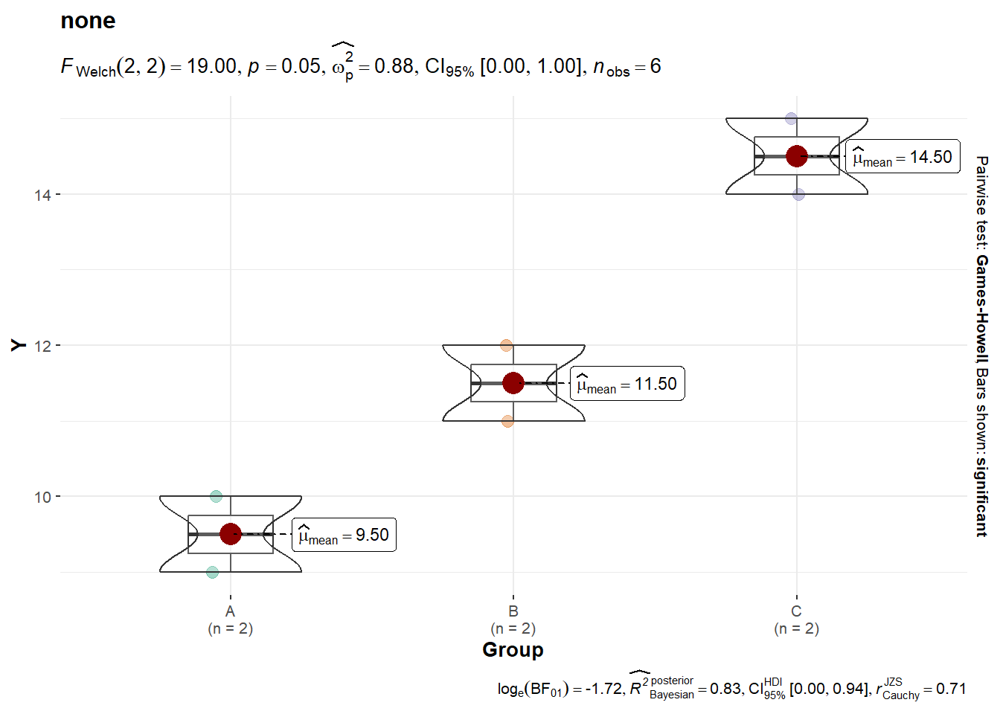
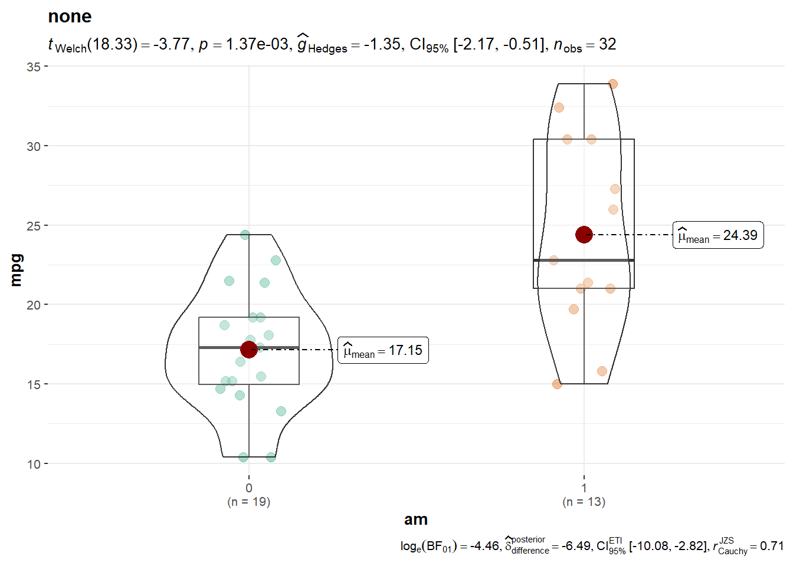
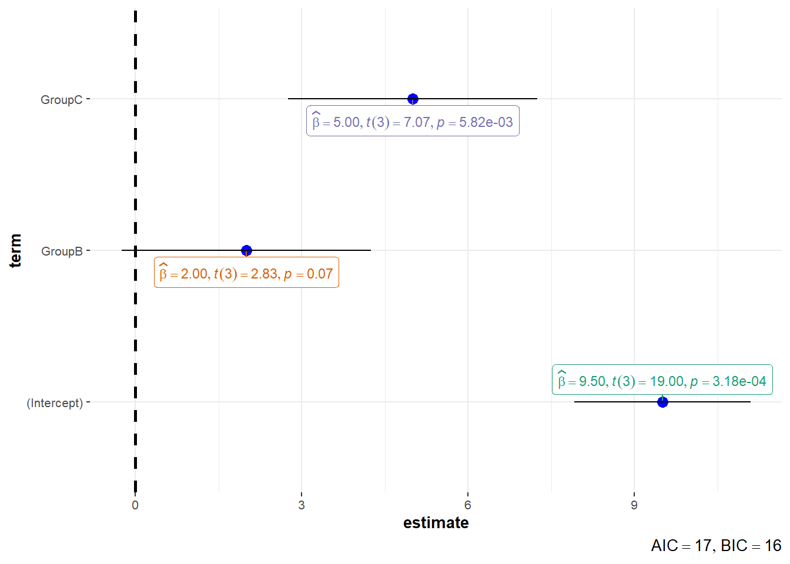
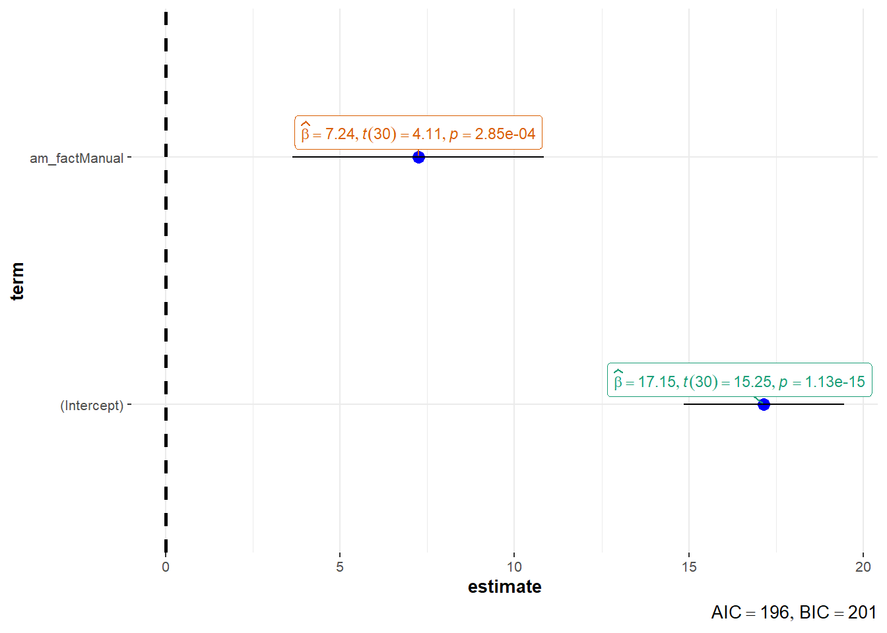
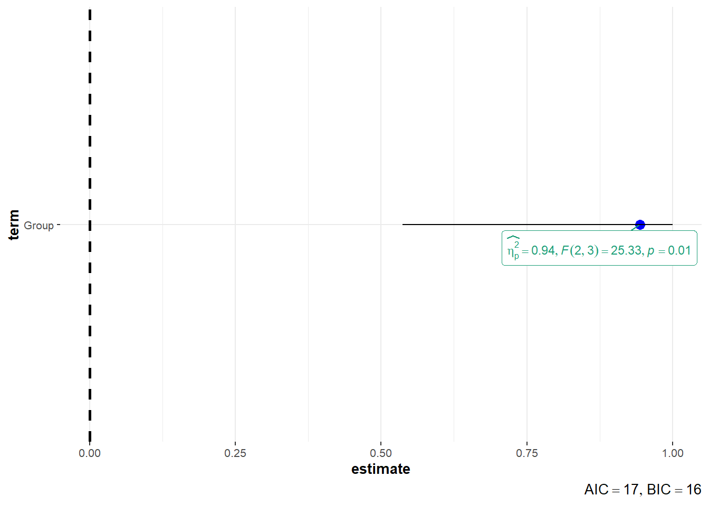

library(dplyr)
library(ggplot2)
library(parameters)
library(performance)
library(GGally)
library(gt)
library(gtsummary)
#library(ggstatsplot)Linear Models (Categorical Predictors
Overview
In this optional module, you will be introduced to validating models.
Readings and Preparation
Before Class: First, read to familiarize yourself with the concepts rather than master them. I will assume that you attend class with some level of basic understanding of concepts and working of functions. The goal of reading should be to understand and implement code functions as well as support your understanding and help your troubleshooting of problems. This cannot happen if you just read the content without interacting with it, however reading is absolutely essential to being successful during class time. Work through some examples so that you have a good idea of your level of understanding and confidence.
Class: In class, some functions and concepts will be introduced and we will practice implementing code through exercises.
Supplementary Readings
Libraries
- {here} 1.0.1: for file path management
- {dplyr} 1.1.4: for manipulating data frames
- {ggplot2} 3.5.0: for data visualization
- {GGally} 2.2.0: for generalized pairs plots
- or {tidyverse} 2.0.0: the full {tidyverse} ecosystem
- {parameters} 0.21.6: for details on model parameters
- {performance} 0.11.0: for evaluating model fit
- or {easystats} 0.7.1: the full {easystats} ecosystem
Others:
- {gt} 0.10.0: for model tables
- {gtsummary} 1.7.2: for model tables
Libraries
Linear Model Equation
The linear model equation with a single predictor: \[ Y = \beta_0 + \beta_1 X + \epsilon \]
- beta_0: is the intercept (the value of Y when X = 0)
- beta_1: is the slope (the change in Y for each one-unit change in X)
- epsilon: model error (the difference between the observed value of Y and value predicted by the model)
Data
We will work with the mtcars data set built into R. Examine the variables for variable types.
| Data: mtcars | ||||||||||
| mpg | cyl | disp | hp | drat | wt | qsec | vs | am | gear | carb |
|---|---|---|---|---|---|---|---|---|---|---|
| 21.0 | 6 | 160 | 110 | 3.90 | 2.620 | 16.46 | 0 | 1 | 4 | 4 |
| 21.0 | 6 | 160 | 110 | 3.90 | 2.875 | 17.02 | 0 | 1 | 4 | 4 |
| 22.8 | 4 | 108 | 93 | 3.85 | 2.320 | 18.61 | 1 | 1 | 4 | 1 |
| 21.4 | 6 | 258 | 110 | 3.08 | 3.215 | 19.44 | 1 | 0 | 3 | 1 |
| 18.7 | 8 | 360 | 175 | 3.15 | 3.440 | 17.02 | 0 | 0 | 3 | 2 |
| 18.1 | 6 | 225 | 105 | 2.76 | 3.460 | 20.22 | 1 | 0 | 3 | 1 |
Using GGally::ggpairs, explore the variable distributions and relationships. Let’s reduce this data frame down to some variables that are numeric and convert those that represent categories (e.g., am = automatic vs. manual; vs = v vs. straight line). So as not to get distracted by mathematical measures of linear association, remove the correlations in the upper quadrants by setting them to be black using upper = list(continuous = wrap("blank"))). This plot is provided for exploring the data and thinking about the relationships before running any models.
dat <-
mtcars |>
mutate(vs_fact = factor(vs),
am_fact = factor(am,
levels = c(0, 1),
labels = c("Automatic", "Manual")
)
) |>
relocate(c(vs, am), .after = last_col()) |>
select(-c(cyl, gear))We see that vs is a factor but the labels are numeric whereas am is a factor with levels that are either “Automatic” or “Manual”.
glimpse(dat)Rows: 32
Columns: 11
$ mpg <dbl> 21.0, 21.0, 22.8, 21.4, 18.7, 18.1, 14.3, 24.4, 22.8, 19.2, 17…
$ disp <dbl> 160.0, 160.0, 108.0, 258.0, 360.0, 225.0, 360.0, 146.7, 140.8,…
$ hp <dbl> 110, 110, 93, 110, 175, 105, 245, 62, 95, 123, 123, 180, 180, …
$ drat <dbl> 3.90, 3.90, 3.85, 3.08, 3.15, 2.76, 3.21, 3.69, 3.92, 3.92, 3.…
$ wt <dbl> 2.620, 2.875, 2.320, 3.215, 3.440, 3.460, 3.570, 3.190, 3.150,…
$ qsec <dbl> 16.46, 17.02, 18.61, 19.44, 17.02, 20.22, 15.84, 20.00, 22.90,…
$ carb <dbl> 4, 4, 1, 1, 2, 1, 4, 2, 2, 4, 4, 3, 3, 3, 4, 4, 4, 1, 2, 1, 1,…
$ vs_fact <fct> 0, 0, 1, 1, 0, 1, 0, 1, 1, 1, 1, 0, 0, 0, 0, 0, 0, 1, 1, 1, 1,…
$ am_fact <fct> Manual, Manual, Manual, Automatic, Automatic, Automatic, Autom…
$ vs <dbl> 0, 0, 1, 1, 0, 1, 0, 1, 1, 1, 1, 0, 0, 0, 0, 0, 0, 1, 1, 1, 1,…
$ am <dbl> 1, 1, 1, 0, 0, 0, 0, 0, 0, 0, 0, 0, 0, 0, 0, 0, 0, 1, 1, 1, 0,…Inspecting Categorical/Factor Variables
If am was truly numeric, we could create a scatter plot and fine a linear model to the data visually. Of course, am does not provide to numeric information about the vehicles but instead provided categorical information about their transmission.
ggplot(data = dat,
mapping = aes(x = am, y = mpg)
) +
geom_point(position = position_jitter(width = .1), color = "yellow") +
geom_smooth(method = "lm") +
theme_dark_mode()`geom_smooth()` using formula = 'y ~ x'
Inspecting the factor variables, we see the box plots reveal different distributions of mpg across the levels of both am_fact and vs_fact. The distributions of hp also look different but in the opposite direction.
dat |>
select(mpg, hp, vs_fact, am_fact) |>
ggpairs(upper = list(continuous = wrap("blank"))) # make correlations blank 
Inspecting the descriptive statistics, the manual-transmission vehicles are getting better gas mileage on average. Make note of this numeric difference.
dat |>
group_by(am_fact) |>
summarize(mpg = mean(mpg, na.rm = TRUE)) |>
pivot_wider(names_from = am_fact,
values_from = mpg
) |>
mutate(diff = Manual - Automatic)# A tibble: 1 × 3
Automatic Manual diff
<dbl> <dbl> <dbl>
1 17.1 24.4 7.24Applying Statistical Models
We see that there are numeric differences in the outcome variable across levels of the predictor. In order to determine whether those differences are random or systematic involves some additional analyses. An important of understanding relationships between variables is not just understanding in a binary sense whether variables are related but rather understanding the strength of a relationship if one exists. In other words, a goal is often to determine whether variability in an outcome variables can be explained by, or accounted for, by predictor variables. One way to understand this strength is R-squared. Another way is to understand the RMSE (root mean square error) associated with the model.
Comparing Factor Levels using t.test()
In a binary sense, a familiar approach is to examine the data is by t-test. In order to compare the independent factor levels, use paired = FALSE. We see the models for both vs and am. The means are presented for both factor levels, which match the data summary.
t.test(mpg ~ am_fact, paired = FALSE, data = dat)
Welch Two Sample t-test
data: mpg by am_fact
t = -3.7671, df = 18.332, p-value = 0.001374
alternative hypothesis: true difference in means between group Automatic and group Manual is not equal to 0
95 percent confidence interval:
-11.280194 -3.209684
sample estimates:
mean in group Automatic mean in group Manual
17.14737 24.39231 If you want to clean up the model, pass it to broom::tidy() and mutate() across() variables to round() them.
t.test(mpg ~ am_fact, paired = FALSE, data = dat) |>
broom::tidy() |>
mutate(across(.cols = where(is.numeric),
.fns = ~round(.x, 4)
)
) |>
gt()| estimate | estimate1 | estimate2 | statistic | p.value | parameter | conf.low | conf.high | method | alternative |
|---|---|---|---|---|---|---|---|---|---|
| -7.2449 | 17.1474 | 24.3923 | -3.7671 | 0.0014 | 18.3323 | -11.2802 | -3.2097 | Welch Two Sample t-test | two.sided |
The estimate represents the difference between the means for the levels of the predictor whereas the additional estimates represent their individual means. The t-value, or statistic value, and the associated p.value provide information about whether the outcome variables differs across the levels of the factor predictor.
The same in formation can be extracted from the vs_fact predictor.
t.test(mpg ~ vs_fact, paired = FALSE, data = dat)
Welch Two Sample t-test
data: mpg by vs_fact
t = -4.6671, df = 22.716, p-value = 0.0001098
alternative hypothesis: true difference in means between group 0 and group 1 is not equal to 0
95 percent confidence interval:
-11.462508 -4.418445
sample estimates:
mean in group 0 mean in group 1
16.61667 24.55714 Another approach would be to use a linear model. In fact, the t-test can be thought of as a linear model predicting mpg by a numeric value of am. Vehicles with automatic transmissions are am = 0 and those with a manual transmission are am = 1.
The Linear Model Approach
One could build a linear model with the numeric variables of am and vs but these variable are not truly numeric. Their levels represent qualitatively/categorically different mechanical systems; they are not more or less of the same system.
To help gain some insight into a linear model, however, we can examine relationships across these numeric variables. We see that there are positive Pearson r values associated with mpg and the numeric versions of the categorical variables (e.g., am no am_fact).
correlation::correlation(data = dat |> select(mpg, am, vs)) |> gt()| Parameter1 | Parameter2 | r | CI | CI_low | CI_high | t | df_error | p | Method | n_Obs |
|---|---|---|---|---|---|---|---|---|---|---|
| mpg | am | 0.5998324 | 0.95 | 0.3175583 | 0.7844520 | 4.1061270 | 30 | 0.0005700415 | Pearson correlation | 32 |
| mpg | vs | 0.6640389 | 0.95 | 0.4103630 | 0.8223262 | 4.8643850 | 30 | 0.0001024781 | Pearson correlation | 32 |
| am | vs | 0.1683451 | 0.95 | -0.1915957 | 0.4883712 | 0.9354143 | 30 | 0.3570439499 | Pearson correlation | 32 |
Building the Model
Building the model is as easy as specifying the outcome as a function of the predictor: lm(mpg ~ am_fact, dat = dat).
mod_am <- lm(mpg ~ am_fact, dat = dat)Understanding the Model
In order to see how lm() will treat the model, we can use modelr::model_matrix() to build a model and examine the components.
modelr::model_matrix(data = dat,
formula = mpg ~ am_fact
) |> gt()| (Intercept) | am_factManual |
|---|---|
| 1 | 1 |
| 1 | 1 |
| 1 | 1 |
| 1 | 0 |
| 1 | 0 |
| 1 | 0 |
| 1 | 0 |
| 1 | 0 |
| 1 | 0 |
| 1 | 0 |
| 1 | 0 |
| 1 | 0 |
| 1 | 0 |
| 1 | 0 |
| 1 | 0 |
| 1 | 0 |
| 1 | 0 |
| 1 | 1 |
| 1 | 1 |
| 1 | 1 |
| 1 | 0 |
| 1 | 0 |
| 1 | 0 |
| 1 | 0 |
| 1 | 0 |
| 1 | 1 |
| 1 | 1 |
| 1 | 1 |
| 1 | 1 |
| 1 | 1 |
| 1 | 1 |
| 1 | 1 |
The model matrix has a column variable for which every observation has an (Intercept) value and a am_factManual value. The intercept is a constant because the intercept of the model will be the same whether the transmission is automatic or manual. Importantly, the am_factManual column created for the model is a combination of the factor name, am_fact and the levels of the factor, which are "Automatic" and "Manual".
For the regression model, there need to be a base or reference category level to which you compare the other level(s). Vehicles that are “automatic” (or not manual) are coded as 0 so this is serving as the base category for the predictor variable because of how am_fact was created. Vehicles that are manual are thus coded as am_factManual = 1 (they are manual). The model provide a binary predictor variable, which can be conceived of a Manual: “Yes” or “No”, which the model has created automatically as am_factManual 0 or 1.
For binary factor variables that can be conceived as “yesses” or “nos”, this distinction is simple to understand. If, however, your predictor is something like location with levels of “California” and “Texas”, the distinction becomes somewhat more challenging, though you could simply recode the variable as California: “yes” vs. “no” where “Texas” = “no”.
Interpreting the Model
In order to interpret the role of the factor predictor, we need to consider the coefficients associated with the model.
- beta_0: the intercept
- beta_1: slope
- epsilon: model error
A model summary() will provide several model details.
summary(mod_am)
Call:
lm(formula = mpg ~ am_fact, data = dat)
Residuals:
Min 1Q Median 3Q Max
-9.3923 -3.0923 -0.2974 3.2439 9.5077
Coefficients:
Estimate Std. Error t value Pr(>|t|)
(Intercept) 17.147 1.125 15.247 1.13e-15 ***
am_factManual 7.245 1.764 4.106 0.000285 ***
---
Signif. codes: 0 '***' 0.001 '**' 0.01 '*' 0.05 '.' 0.1 ' ' 1
Residual standard error: 4.902 on 30 degrees of freedom
Multiple R-squared: 0.3598, Adjusted R-squared: 0.3385
F-statistic: 16.86 on 1 and 30 DF, p-value: 0.000285To extract the coefficients specifically, we can pass the model to parameters::parameters().
parameters::parameters(mod_am)Parameter | Coefficient | SE | 95% CI | t(30) | p
-----------------------------------------------------------------------
(Intercept) | 17.15 | 1.12 | [14.85, 19.44] | 15.25 | < .001
am fact [Manual] | 7.24 | 1.76 | [ 3.64, 10.85] | 4.11 | < .001
Uncertainty intervals (equal-tailed) and p-values (two-tailed) computed
using a Wald t-distribution approximation.As before, the y-intercept of this mpg ~ am_fact model reflects the mpg when x = 0. Because x is am_factManual and 0 = "automatic", then the y-intercept reflects the mpg when vehicles have a manual transmission.
The coefficient for the predictor represents the slope as with other linear models. The model clarifies that the slope is associate with the vehicles with manual transmission, by labeling the coefficient/parameter as "am fact [Manual]".
Let’s unpack the slope value (beta_1), which is 7.2449393. For each unit change in the predictor, there is a 7.2449393 increase in mpg. Because vehicles can be either automatic or manual, this unit change of 1 reflects the change from automatic (0) to manual (1). Thus, the slope should represent the difference in mpg between the two groups. The slope reflects the same difference observed between the means for the factor levels (e.g., am = 0 vs. am = 1). This difference is positive and in favor of higher mpg for the manual-transmission vehicles rather than negative in favor of the automatic-transmission vehicles.
ggplot(data = dat,
mapping = aes(x = am_fact, y = mpg)
) +
geom_point(color = "yellow",
position = position_jitter(width = .1)
) +
theme_dark_mode()
You can check the model diagnostics performance::check_model).
performance::check_model(mod_am)
For feedback-related disgnostic functions, use performance::check_residuals() and performance::check_heteroskedasticity().
performance::check_residuals(mod_am)OK: Simulated residuals appear as uniformly distributed (p = 0.782).performance::check_heteroskedasticity(mod_am)OK: Error variance appears to be homoscedastic (p = 0.065).Handling Factors with > 2 Levels
Let’s create a simple data frame containing a factor and a numeric variable.
data <- data.frame(
Id = c(1, 2, 3, 4, 5, 6),
Group = c("A", "B", "C", "B", "A", "C"), # Example categorical predictor with 3 levels
Y = c(10, 12, 15, 11, 9, 14) # Example response variable
)Make the variable a factor().
data <-
data |>
mutate(Group = factor(Group,
labels = c("A", "B", "C")
)
)
data |> gt()| Id | Group | Y |
|---|---|---|
| 1 | A | 10 |
| 2 | B | 12 |
| 3 | C | 15 |
| 4 | B | 11 |
| 5 | A | 9 |
| 6 | C | 14 |
Looking at the factor levels, there appear to be some differences.
data |>
group_by(Group) |>
summarize(Y_mean = mean(Y, na.rm = T),
Y_sd = sd(Y, na.rm = T)
)# A tibble: 3 × 3
Group Y_mean Y_sd
<fct> <dbl> <dbl>
1 A 9.5 0.707
2 B 11.5 0.707
3 C 14.5 0.707Dummy Coding
Remember that linear models are designed for with numerical variables. Many data-science questions, however, involve asking about the importance of categorical/factor variables. In order to run linear models, categorical variables need to be converted to numeric variables in some way. Dummy coding is one way to incorporate categorical variables into regression models.
Why dummy code factor predictors?
For Comparing Factor Levels: Dummy coding allows for making comparisons across levels of categorical variable with respect to the outcome variable. Dummy variables, however, allow for quantifying the role of different levels of the factor of interest relative to a reference category. This last part is important. There needs to be a reference, or baseline, group. Typically, this reference group is the baseline or control factor level but for some variables like race, ethicity, college major, etc. a control or baseline factor level is ambiguous. Nevertheless, a reference level is needed.
Facilitate Interpretation of Coefficients: Dummy coding factors variables provides clear interpretation of regression coefficients associated with the influence of factor variables. Each coefficient of the linear model represents the *difference in the outcome variable between the respective category and the reference category**. This makes it easier to understand the impact of each category on the outcome variable.
Avoiding Multicollinearity: Linear models are constrained when model predictors are correlated with each other, an issue referred to as multicollinearity. When models involve categorical variables with >2 levels, dummy coding helps reduce, or avoid, multicollinearity. Dummy-coding variables creates factors levels that are represented independently, thereby reducing multicollinearity. This can be evaluated using
performance::check_collinearity().Model Flexibility: Dummy coding allows for flexibility in modeling categorical variables with multiple levels. Using dummy coding, you can include multiple levels of factor variables. This makes the dummy-coding approach applicable to a wide range of data questions.
Implementing Dummy Coding
We can create dummy coded variables in different ways. One way is to use {modelr}’s model.matrix()
data |>
model.matrix(object = ~ Group - 1) GroupA GroupB GroupC
1 1 0 0
2 0 1 0
3 0 0 1
4 0 1 0
5 1 0 0
6 0 0 1
attr(,"assign")
[1] 1 1 1
attr(,"contrasts")
attr(,"contrasts")$Group
[1] "contr.treatment"We can create the dummy variable and join to the data frame.
dummy_vars <-
data |>
model.matrix(object = ~ Group - 1)Join with the data frame.
(data <- cbind(data, dummy_vars)) Id Group Y GroupA GroupB GroupC
1 1 A 10 1 0 0
2 2 B 12 0 1 0
3 3 C 15 0 0 1
4 4 B 11 0 1 0
5 5 A 9 1 0 0
6 6 C 14 0 0 1We see that there are dummy variables for each level of the original factor variable, Group. The new variables are named with the factor level names appended to the factor name. This results in a variable for each level for with 0 represents not belonging to that factor level and 1 represents belongingness to that factor level.
Fit the linear model.
mod_categ_mult <- lm(Y ~ Group, data = data)Examine the model summary.
summary(mod_categ_mult)
Call:
lm(formula = Y ~ Group, data = data)
Residuals:
1 2 3 4 5 6
0.5 0.5 0.5 -0.5 -0.5 -0.5
Coefficients:
Estimate Std. Error t value Pr(>|t|)
(Intercept) 9.5000 0.5000 19.000 0.000318 ***
GroupB 2.0000 0.7071 2.828 0.066276 .
GroupC 5.0000 0.7071 7.071 0.005816 **
---
Signif. codes: 0 '***' 0.001 '**' 0.01 '*' 0.05 '.' 0.1 ' ' 1
Residual standard error: 0.7071 on 3 degrees of freedom
Multiple R-squared: 0.9441, Adjusted R-squared: 0.9068
F-statistic: 25.33 on 2 and 3 DF, p-value: 0.01322Before examining the parameters, let’s look at the group means again. Group “B” is greater than Group “A” by a value of 2 and Group “C” is greater than Group “A” by a value of 5.
data |>
group_by(Group) |>
summarize(Group = mean(na.omit(Y)))# A tibble: 3 × 1
Group
<dbl>
1 9.5
2 11.5
3 14.5Examine the model parameters.
parameters::parameters(mod_categ_mult)Parameter | Coefficient | SE | 95% CI | t(3) | p
------------------------------------------------------------------
(Intercept) | 9.50 | 0.50 | [ 7.91, 11.09] | 19.00 | < .001
Group [B] | 2.00 | 0.71 | [-0.25, 4.25] | 2.83 | 0.066
Group [C] | 5.00 | 0.71 | [ 2.75, 7.25] | 7.07 | 0.006
Uncertainty intervals (equal-tailed) and p-values (two-tailed) computed
using a Wald t-distribution approximation.The coefficient for Group [B] is 2, which reflects the difference between the reference group (e.g., “A”) and Group “B”. Similarly, the coefficient for Group [C] is 5,reflects the difference between the reference group (e.g., “A”) and Group “C”. The corresponding p-values suggest that group C differs from Group “A” but Group “B” does not differ from Group “A”. The only comparison that is missing is between Groups “B” and “C”.
You could plot the coefficients using ggstatsplot::ggcoefstats() by passing the model to the function. {ggstatsplot} has a set of functions that help visualize model details quickly. The plots are not very customizable like what you could produce using {ggplot2}.
ggstatsplot::ggcoefstats(mod_categ_mult)
Fit with Analysis of Variance (ANOVA).
You could also fit a model using aov(), which is an ANOVA alternative to lm(). However, there are different statistical models that affect how variance is decomposed. These are referred to as type I ,type II, and type III sums of squares models. These are not the same, so don’t apply them without investigating. A discussion of these differences are beyond the scope of this content.
aov_cat <- aov(Y ~ Group, data = data)Examine the model summary.
summary(aov_cat) Df Sum Sq Mean Sq F value Pr(>F)
Group 2 25.33 12.67 25.33 0.0132 *
Residuals 3 1.50 0.50
---
Signif. codes: 0 '***' 0.001 '**' 0.01 '*' 0.05 '.' 0.1 ' ' 1parameters::parameters(aov_cat)Parameter | Sum_Squares | df | Mean_Square | F | p
----------------------------------------------------------
Group | 25.33 | 2 | 12.67 | 25.33 | 0.013
Residuals | 1.50 | 3 | 0.50 | |
Anova Table (Type 1 tests)And how to compare the separate groups? You could create your one theoretically motivated contrasts but one way is to use the TukeyHSD() to perform a Tukey’s Honestly Significant Difference Test.
TukeyHSD(aov_cat) Tukey multiple comparisons of means
95% family-wise confidence level
Fit: aov(formula = Y ~ Group, data = data)
$Group
diff lwr upr p adj
B-A 2 -0.95483162 4.954832 0.1288220
C-A 5 2.04516838 7.954832 0.0118708
C-B 3 0.04516838 5.954832 0.0480695The corresponding p-values suggest that Groups C versus C differ and that Group V versus B.
ggstatsplot::ggbetweenstats(
data = data,
x = Group,
y = Y,
title = "none"
)Warning in min(x): no non-missing arguments to min; returning InfWarning in max(x): no non-missing arguments to max; returning -Inf
ggstatsplot::ggbetweenstats(
data = dat,
x = am,
y = mpg,
title = "none"
)Warning in min(x): no non-missing arguments to min; returning InfWarning in max(x): no non-missing arguments to max; returning -Inf
ggstatsplot::ggcoefstats(mod_categ_mult)
ggstatsplot::ggcoefstats(mod_am)
aov_catCall:
aov(formula = Y ~ Group, data = data)
Terms:
Group Residuals
Sum of Squares 25.33333 1.50000
Deg. of Freedom 2 3
Residual standard error: 0.7071068
Estimated effects may be unbalancedggstatsplot::ggcoefstats(aov_cat)